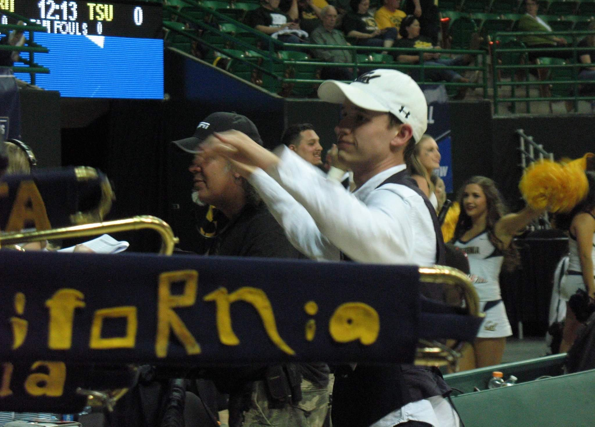
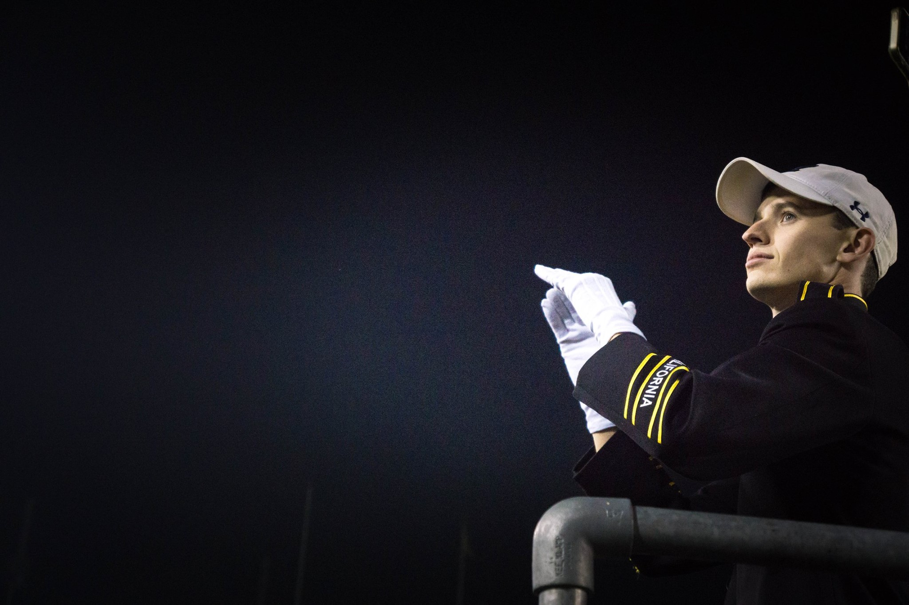

Cal Band
In Feburary of 2016 the Cal Band was invited to perform alongside Coldplay, Bruno Mars, and Beyonce at the Super Bowl 50 halftime show. The countless hours of rehearsal were all worth the once-in-a-lifetime oppurtinity of performing for millions of viewers. You can check out the whole show here. I show up on camera at the 2:27 mark.
Over the Summer of 2016 the Cal Band went on a tour of Asia, stopping in China and Japan. We played at the Great Wall and an elementary school in China. In Japan we performed a joint concert with the University of Tokyo as well as playing at the Okinawa Naval Base as part of their family appreciation week.
In March of 2017 I travelled to Seatlle, Las Vegas, and Waco, Texas for the Women's PAC-12 Basketball Tournament, Men's PAC-12 Basketball Tournament, and Women's NCAA Basketball Tournament. As the Student Director for the Cal Band, I had a great time organizing the trips and conducting during the basketball games.
For the Fall of 2017 as part of my Student Director responsibilites, I conducted the band at all of the Cal Football games. Win or lose, it is always a pleasure to be in front of the band.
